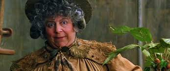

Casa Hufflepuff
Hufflepuff es una de las cuatro casas del Colegio Hogwarts de Magia y Hechicería. Su fundadora es la bruja medieval Helga Hufflepuff. La jefa de la casa es Pomona Sprout. El fraile gordo es el fantasma de la casa. Hufflepuff es la mas inclusiva de las cuatro casas; el trabajo duro, la paciencia, la amistad y la honestidad son sumamente necesarias para ser miembros. Su animal emblemático es el tejón y sus colores son el amarillo y negro.Hufflepuff responde en gran medida a los elementos de la tierra.
